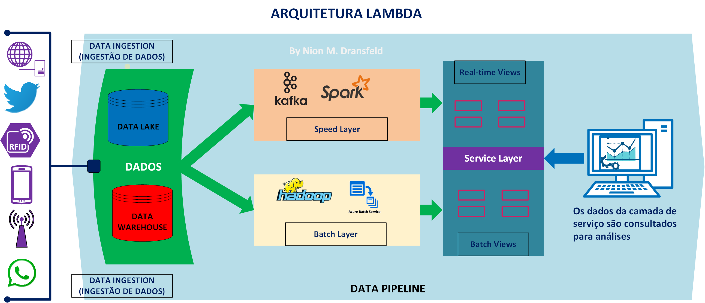

Data Lake e Arquitetura Lambda
Este artigo oferece um conceito introdutório de Data Lake e da Arquitetura Lambda, fundamentais no mundo da ciência de dados e da análise de big data.
Definições
Um Data Lake é uma forma de arquitetura de dados que permite armazenar grandes volumes de dados em seu formato bruto ou nativo. Diferentemente de um data warehouse, que armazena dados de maneira estruturada e frequentemente depende de esquemas rígidos, um data lake não requer uma estrutura ou formato específico para os dados no momento do armazenamento.
Os dados em um data lake são armazenados em uma variedade de formatos, incluindo dados estruturados, semiestruturados e não estruturados. Isso permite que organizações com grande quantidade de dados de diferentes tipos e fontes, mantenham suas informações em um formato mais bruto e flexível.
Os usuários podem então extrair esses dados e transformá-los conforme necessário para suas necessidades específicas. Como tal, os data lakes são particularmente úteis para big data e análises em tempo real, além de machine learning e IA, onde o acesso a dados brutos pode ser extremamente valioso.
Características de um Data Lake
Data Lakes são úteis quando você precisa manipular um grande volume de dados (Big Data).Geralmente, é recomendavél a implantação de Data Lakes para um volume de petabytes ou exabytes de dados. Abaixo as principais características:
- Centralizar todos os dados da organização num único local;
- Aceita dados estruturados, semi-estruturados e não-estruturados;
- Alta performance em escrita (ingestão) e em acesso (consumption);
- Baixo custo de armazenamento;
- Suporta regras de segurança e proteção de dados;
- Desacopla o armazenamento do processamento (permitindo alta performance e alta escala).
Arquitetura Lambda
A Arquitetura Lambda é frequentemente usada em Data Lakes devido à sua capacidade de processar grandes quantidades de dados em tempo real e em lote. Essa arquitetura permite que as empresas usem dados históricos (através da camada de batch) e dados em tempo real (através da camada de speed) para obter insights.

A capacidade de combinar a análise de dados históricos e em tempo real pode fornecer uma visão mais completa do negócio, permitindo a tomada de decisões mais assertivas. Além disso, como a arquitetura Lambda permite o processamento de dados brutos, ela se encaixa bem com o conceito de Data Lake, que armazena dados em seu formato bruto.
A Arquitetura Lambda tem três componentes principais:
Batch Layer (Camada de Batch): Esta camada tem como objetivo lidar com grandes volumes de dados históricos. Os dados são processados em lote e o resultado é armazenado no data lake. Esta camada é responsável pela computação de views (visões ou conjuntos de dados) baseadas em um longo período de tempo.
Speed Layer (Camada de Speed): Esta camada tem como objetivo fornecer visualizações em tempo real dos dados mais recentes, lidando com dados que não foram processados pela camada de batch. Sua finalidade é fornecer insights em tempo real e ela normalmente opera com uma janela de tempo muito menor.
Service Layer (Camada de Serviço): Esta camada tem a função de responder às consultas, geralmente feitas por usuários ou aplicativos. O procedimento consiste em consultar os dados processados tanto pela camada de batch quanto pela camada de speed.
No entanto, a arquitetura lambda é complexa para implementar e manter, já que exige a manutenção de dois sistemas de processamento de dados paralelos (batch e speed)..
Implementação da Arquitetura Lambda
A implementação da Arquitetura Lambda geralmente envolve várias ferramentas diferentes, dependendo das necessidades específicas do projeto.A seguir são apresentadas algumas das ferramentas comumente usadas:
Apache Hadoop: O Hadoop é um dos sistemas mais populares para processamento de dados em lote. Ele fornece um sistema de arquivos distribuído que permite o processamento de grandes volumes de dados em clusters de computadores.
Apache Spark: O Spark é outra ferramenta comumente usada para processamento de dados em lote, também podendo ser usado para o processamento de dados em tempo real, tornando-o uma opção flexível para a camada de speed.
Apache Storm: O Storm é uma solução para processamento de dados em tempo real. É capaz de processar fluxos de dados grandes e contínuos, sendo uma boa escolha para a camada de speed na Arquitetura Lambda.
Apache Kafka:O Kafka é um sistema de streaming de dados distribuídos. Ele é comumente usado para gerenciar fluxos de dados entre as diferentes camadas de uma arquitetura Lambda.
Amazon S3: O Amazon S3 é um serviço de armazenamento em nuvem que é bastante usado para armazenar os dados brutos e processados na Arquitetura Lambda.
Elasticsearch / Apache Solr: Essas são ferramentas de pesquisa e análise que podem ser usadas na camada de serviço para fornecer consultas rápidas e eficientes sobre os dados processados.
Vale ressaltar que a escolha de ferramentas dependerá das necessidades específicas de cada projeto. Portanto, é possível que diferentes implementações da Arquitetura Lambda usem um conjunto diferente de ferramentas.
Conclusão
A crescente quantidade de dados gerados por várias fontes vem exigindo que as empresas explorem soluções como Data Lakes e Arquitetura Lambda para lidar com essa avalanche de informações. As empresas estão procurando extrair valor desses dados, e a combinação de Data Lakes com a Arquitetura Lambda permite que elas façam exatamente isso.
Em resumo, embora o uso de Data Lakes e a Arquitetura Lambda possam apresentar desafios, eles oferecem benefícios significativos para as instituições/corporações que precisam lidar com grandes volumes de dados variados e desejam obter insights em tempo real. Como todas as decisões tecnológicas, a escolha de usar estas soluções deve ser feita com base nas necessidades específicas e capacidades de uma organização.
#DataLake #LambdaArchitecture #BigData #AWSLambda #DataProcessing #DataAnalytics #CloudComputing #ETL #MachineLearning #DataScience